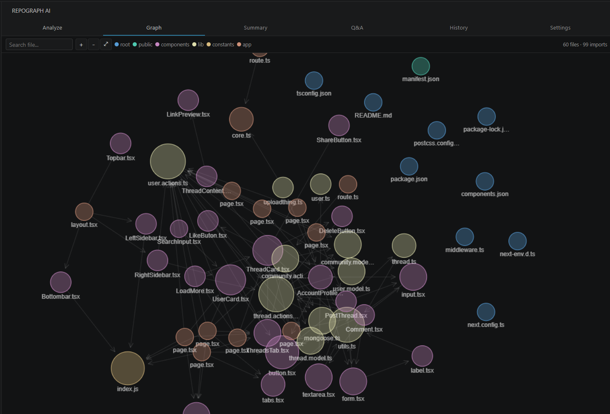
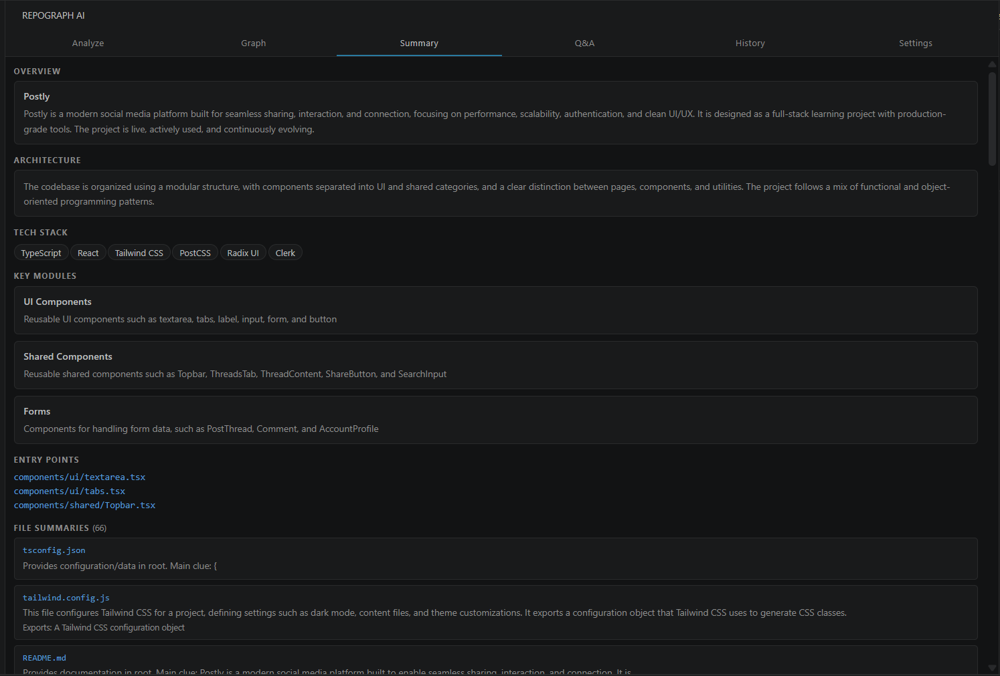
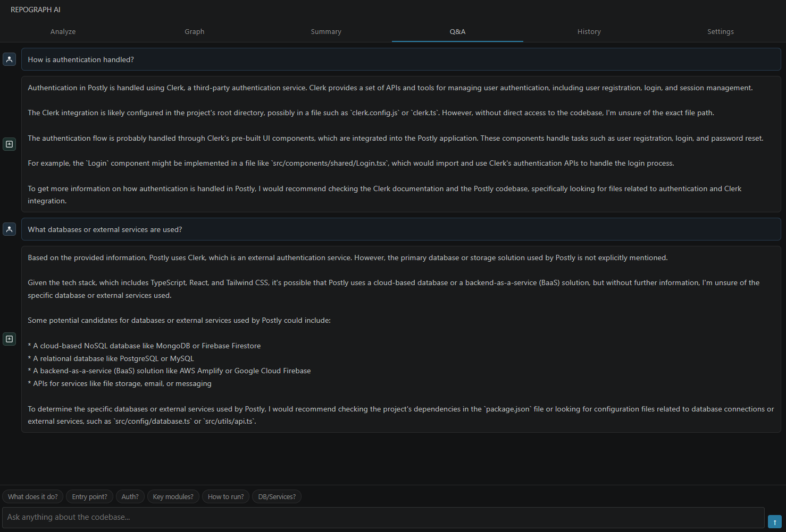

RepoGraph AI scans your workspace, maps every file relationship, and gives you an interactive dependency graph, AI summaries, and a live Q&A — all on your own API key.



The entire pipeline runs locally. The only external call is to the AI provider you configure.
Start free with Groq or run 100% offline with Ollama. All providers support custom model names.
| Provider | Cost | Default Model | Best for |
|---|---|---|---|
| Groq | Free tier | llama-3.3-70b-versatile | Best starting point. Fast, generous free limits. |
| Ollama | 100% Local | llama3.2 | Complete privacy. No internet after setup. |
| Google Gemini | Free tier | gemini-1.5-flash | Good free quota. Fast and accurate. |
| Anthropic Claude | Paid | claude-haiku-4-5 | Highest quality summaries and answers. |
| OpenAI | Paid | gpt-4o-mini | Reliable, cheap at mini tier. |
All providers support custom model name input.
RepoGraph AI has no backend. No server, no account, no database, no usage tracking. The only network request is to the AI provider you configure.
Free. Open source. No account required.